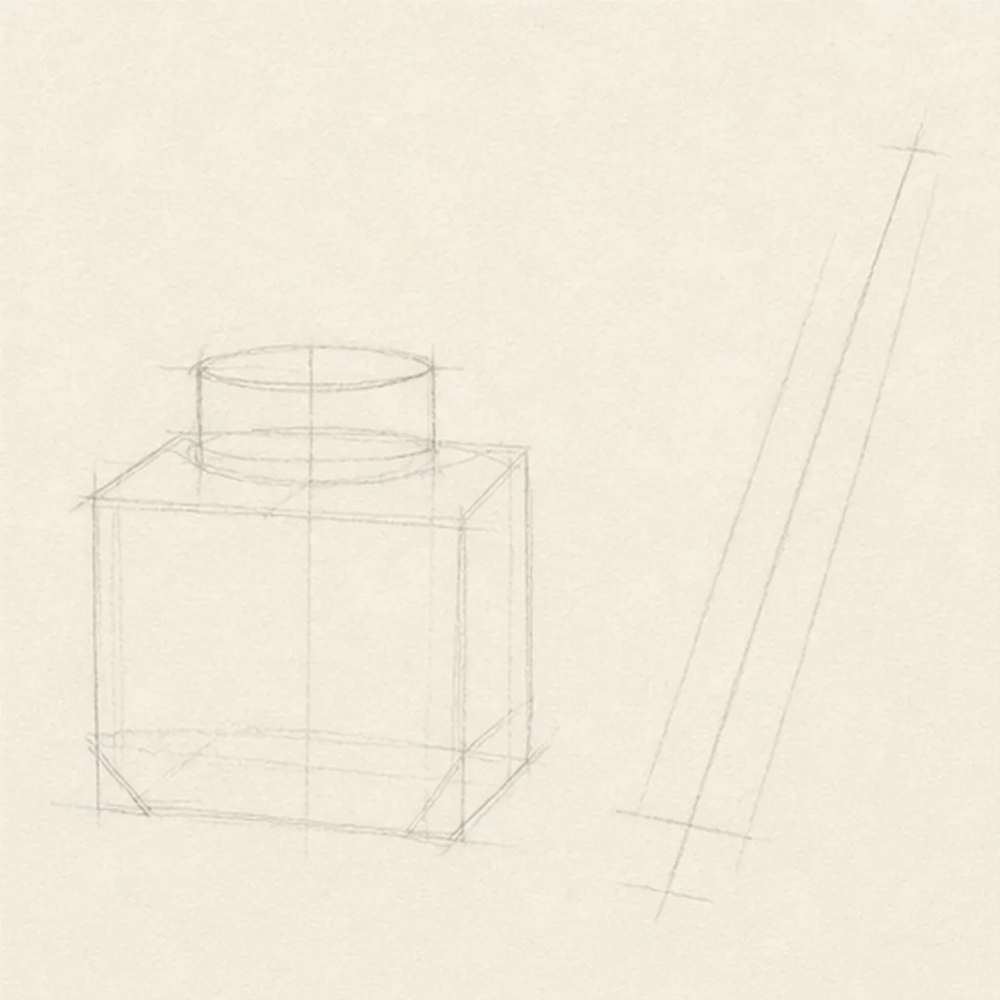
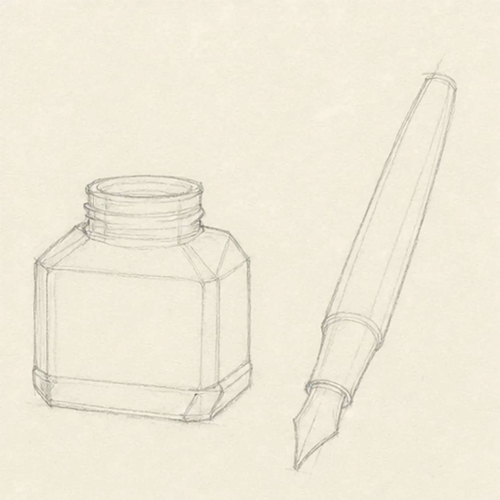
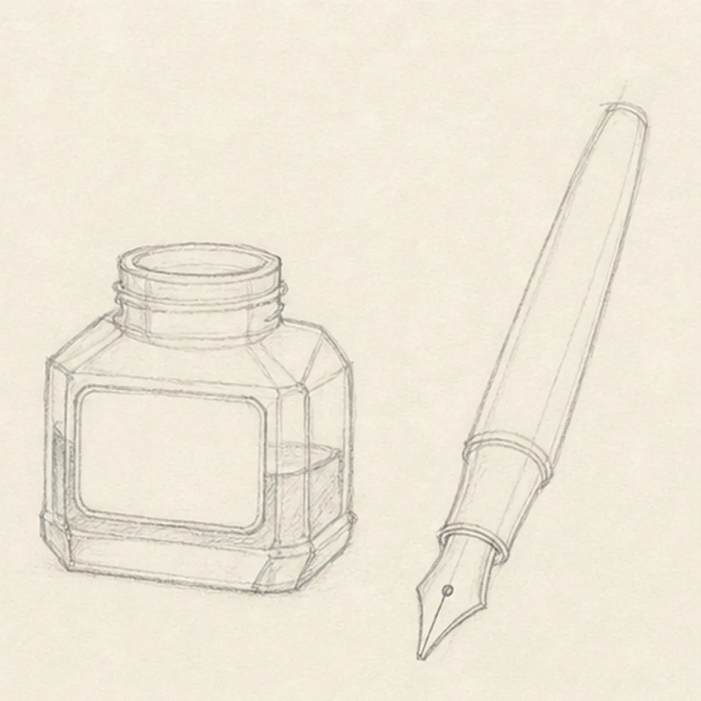
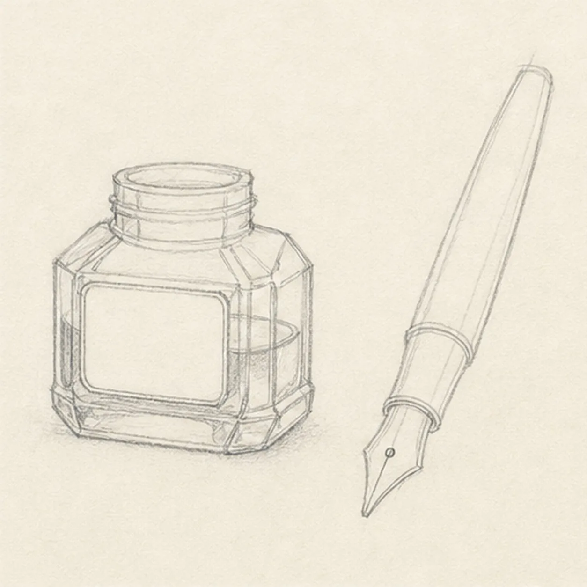
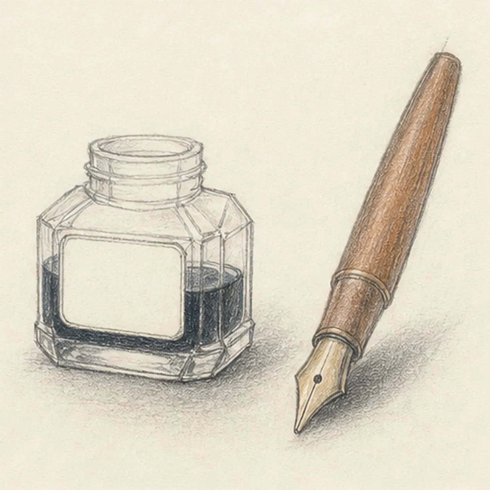

From the archive
Let's draw a fountain pen and ink bottle
Treat this as one small practice round: build the subject lightly, notice the shapes, then darken only the lines that help the finished sketch.
-
01

Place the bottle and pen
Block a squat bottle with a centered neck ellipse, then set one long diagonal centerline and two light parallel guides for the pen beside it.
Sketch tip: Ghost the pen angle first and compare its length with the bottle height. Keeping a clear wedge of paper between the two objects will stop the pen from hiding the glass.
-
02

Shape the glass and pen
Build the bottle's sloped shoulders, short threaded neck, beveled base, tapered pen barrel, narrow grip, and exposed nib around the guides.
Sketch tip: Compare the shoulder angles and bottom bevels instead of measuring them. Small asymmetry feels handmade, but each plane should still turn toward the same bottle front.
-
03

Add the ink and nib landmarks
Draw a blank inset front panel and curved ink-level line inside the bottle, then add the grip band, nib slit, and small breathing hole.
Sketch tip: Echo the neck ellipse when you curve the ink level. On the nib, place the slit before the breathing hole so both stay centered along the pen axis.
-
04

Describe the glass planes
Add a few inner glass edges and reserve pale reflection shapes on the established bottle, leaving the front panel completely blank.
Sketch tip: Use fewer marks than you think you need. Two or three clear edge changes and untouched paper highlights can describe glass better than even shading everywhere.
-
05

Tint the writing tools
Add blue-black pencil below the existing ink line, warm brown to the barrel, pale ochre-gray to the nib, and one soft shadow beneath both objects.
Sketch tip: Pull the brown strokes along the barrel and keep the blue-black ink darker at the bottom. Work around the reserved glass highlights instead of trying to erase them later.
-
06
Finish the writing still life
Strengthen the keeper contours and clarify the established glass planes, nib details, ink, barrel color, highlights, and shadows.
Sketch tip: Check that the bottle front remains text-free and the pen still sits beside it rather than through it. Stop before adding a cap, paper, handwriting, or desk clutter.